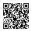

ICML 2026
Zipeng Wu
PhD Researcher, University of Birmingham
Temporal representation learning for foundation / world models and non-stationary time-series ML.

ICML 2026
PhD Researcher, University of Birmingham
Temporal representation learning for foundation / world models and non-stationary time-series ML.
